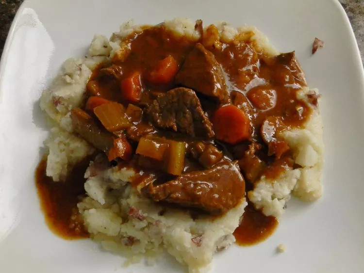

This Guinness beef stew is a very simple dish, but at the same time, it has a deep, complex, rich flavor.
The maltiness of dark beer really does amazing things for the gravy. I served this in a nice ring of green onion-mashed potatoes. I hope you give this a try, whether for Saint Patrick's Day or any time of the year.
Transfer the bacon to a stew pot, but leave the fat in the skillet.
Place the browned beef in the stew pot.
Pour the beer in and stir.
Transfer the contents of the skillet to the pot.
Serve in bowls or over mashed potatoes.